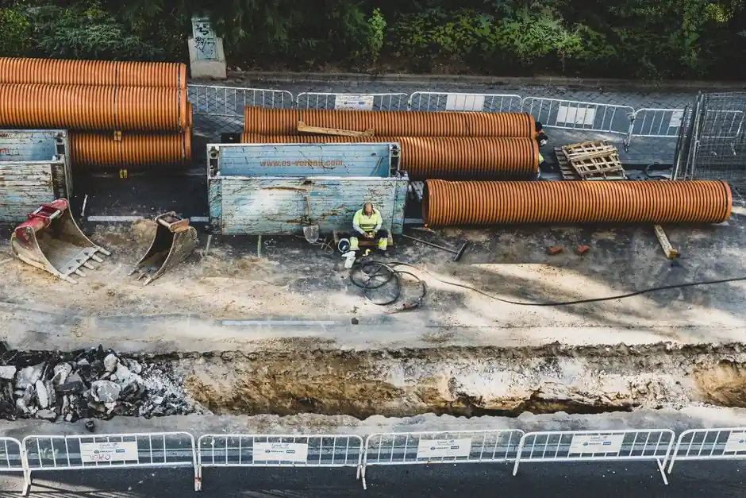

When to repair vs replace your sewer line in Arlington Heights
A cracked clay tile or root-choked PVC line forces a real decision. Here is how we help Arlington Heights homeowners choose repair or replacement in 2026.

Repair your sewer line when the damage is a single crack, joint separation, or root intrusion in one short section. Replace it when the pipe is collapsing, back-pitched, or made of Orangeburg or failing clay tile that will keep breaking. The repair vs replace sewer line Arlington Heights IL decision comes down to pipe material, how much of the run is damaged, and whether the line can be fixed without digging up your yard twice.
We run a camera down the line, measure the slope, and give you a straight answer. Below you will find the signs that point to replacement, the 2026 cost ranges we see in Arlington Heights, and how trenchless work changes the math.
The short answer: repair vs replace sewer line in Arlington Heights IL
Repair vs replace sewer line Arlington Heights IL is a decision that depends on three things: the pipe material, the length of the damaged section, and whether the line is still structurally sound. A 4-foot crack in PVC is a repair. A 60-foot run of cracked clay tile under a mature maple is a replacement.
Most of the homes we work on in Arlington Heights were built between 1950 and 1985. That means we see a lot of cast iron, clay tile, and early PVC. Cast iron from the 1950s and 1960s is often rusted through at the bottom of the pipe. Clay tile from the same era has open joints that roots find within a season. PVC from the 1980s is usually fine unless it was backfilled with rubble.
We look at four things before we recommend anything:
- Pipe material and age - Orangeburg, cast iron, clay tile, or PVC.
- Defect type - crack, offset joint, bellied section, root mass, or collapse.
- Length of the problem - one section or the whole run.
- Depth and access - how deep the line sits and what is above it.
If the camera shows one bad joint and the rest of the pipe is clean, we repair it. If the camera shows multiple failures along the run, replacement is cheaper over five years than three repairs.
How do I know if my sewer line needs replacing in Arlington Heights, Illinois?
You need a new sewer line when you see repeat backups in the same spot, sewage odors in the basement, or sinkholes forming along the line in the yard. Those are the sewer line replacement signs Arlington Heights IL homeowners should not ignore.
Here is what we actually find on camera when a line is past repair:
- Repeat backups - the same drain backs up two or three times in a year, even after snaking.
- Multiple low spots - the camera shows standing water in more than one section.
- Offset joints - pipe sections have shifted and the camera hits a lip.
- Root mass at several joints - not just one.
- Collapsed or bellied pipe - the camera cannot pass through.
- Sewage smell in the yard or basement - a sign of a break or a dry trap.
- Sinkholes or soft spots in the lawn - soil is washing into the line.
We see this most often in the older blocks near downtown Arlington Heights and around the Arlington Heights Historical Museum, where mature trees sit close to the sewer run. Roots find clay tile joints within a few years. If the camera shows roots at three or more joints, we stop recommending snaking and start talking about replacement.
One more sign: your line has been snaked three times in two years. That is a replacement conversation, not a repair conversation.
Repair makes sense when the damage is isolated
Repair is the right call when the camera shows one defect in an otherwise healthy pipe. That means a single cracked section, one offset joint, or a root intrusion at one spot. We cut out the bad section and replace it with PVC.
Typical repair scenarios we handle:
- A 3- to 6-foot section of cast iron rusted through at the bottom.
- One separated joint in clay tile where roots entered.
- A single crack from a rock or root pressure.
- A broken section under a driveway or sidewalk that can be spot-repaired with trenchless methods.
For these jobs we use sewer line repair Arlington Heights IL - a spot repair that cuts out the damaged piece and couples in new PVC. Most spot repairs run $600 to $2,500 depending on depth and access. If the rest of the pipe is clean on camera, a repair buys you 10 to 15 more years.
We also recommend sewer line cleaning Arlington Heights IL after a repair to clear any debris left from the excavation. A clean line lets us re-camera the pipe and confirm the repair is sound before we backfill.
Replacement wins when the pipe itself is failing
Replacement is the right call when the pipe material itself is the problem. Orangeburg, collapsed cast iron, and clay tile with multiple failures along the run will keep breaking. Patching one section just moves the problem 10 feet down the line.
We recommend replacement when:
- Orangeburg pipe - this tar-paper pipe from the 1940s and 1950s is collapsing everywhere. There is no repair.
- Cast iron with 50% or more wall loss - the pipe is rusting from the inside out.
- Clay tile with three or more failed joints - roots will keep coming back.
- Back-pitched or bellied line - the pipe holds water and will keep clogging.
- Collapsed section - the camera cannot pass, and the soil above is falling in.
When we replace, we pull the old pipe and run new PVC or HDPE. For most Arlington Heights homes, that means a 4-inch line at a 1/4-inch-per-foot slope. We camera the new line before we backfill and again after compaction.
If you are also dealing with water backing up into floor drains during heavy rain, the sewer line may not be the only issue. We often find sump pump services Arlington Heights IL are needed alongside the sewer work to keep the basement dry.
Sewer line replacement cost in Arlington Heights and 60005
Sewer line replacement cost 60005 runs $4,500 to $12,000 for a typical 60-foot residential run in 2026. The range depends on depth, access, pipe material, and whether we can go trenchless.
Here is how the numbers break down in this area:
- Spot repair - $600 to $2,500.
- Trenchless replacement (pipe bursting or lining) - $6,000 to $12,000 for a standard run.
- Conventional dig-and-replace - $4,500 to $9,000, plus restoration.
- Driveway or sidewalk restoration - $1,500 to $4,000 if we have to cut concrete.
- Permit - $150 to $400 depending on the scope.
We give you a written price before we start. No surprises after the trench is open.
One thing that affects cost in Arlington Heights: lot size and mature trees. A line that runs under a 60-year-old maple costs more to replace because we have to work around roots and may need to hand-dig near the trunk. Trenchless work avoids most of that.
Trenchless sewer replacement in Arlington Heights, Illinois
Trenchless sewer replacement Arlington Heights, Illinois is the method we use when we can avoid digging up a finished yard, driveway, or patio. We dig two small access pits - one at the house and one at the city main - and pull or line the new pipe between them.
Two methods we use:
- Pipe bursting - we pull a bursting head through the old pipe and pull new HDPE behind it. The old pipe breaks outward and the new pipe takes its place.
- Cured-in-place lining (CIPP) - we inflate a resin-saturated liner inside the old pipe and cure it. The liner becomes the new pipe wall.
Pipe bursting works for clay tile, cast iron, and PVC. CIPP works when the old pipe still has shape and we just need a new interior wall. Both avoid a 60-foot trench through your lawn.
For homeowners in the older neighborhoods near Recreation Park and Camelot Park, trenchless work is often the only way to replace a line without cutting through a mature landscape. We camera the line first to confirm the method will work.
If you are not sure what is under your yard, start with a video camera inspection Arlington Heights IL. The camera tells us the pipe material, the defect type, and whether trenchless is an option.
How long does sewer line replacement take in Arlington Heights?
Sewer line replacement takes 1 to 3 days for a standard residential run in Arlington Heights. Trenchless work is often done in one day. Conventional dig-and-replace with concrete restoration runs 2 to 3 days.
Here is the typical timeline:
- Day 1 - camera inspection, locate the line, pull the permit, and mark utilities.
- Day 1 or 2 - excavation or trenchless pull.
- Day 2 or 3 - camera the new line, backfill, compact, and restore the surface.
Permits in Arlington Heights usually take 1 to 3 business days. We handle the paperwork. If the line crosses a parkway or city right-of-way, the timeline can stretch by a day or two.
You can use water and drains during most of the work, except for the few hours when the line is open. We tell you the night before so you can plan.
What to watch out for
The biggest mistake we see is patching a failing line one section at a time. Homeowners spend $1,200 on a repair, then $1,800 the next year, then $2,400 the year after. By the third repair, they have spent more than a trenchless replacement would have cost.
Other things to watch:
- Snaking a root problem without camera inspection - the roots come back in 6 to 12 months.
- Using a drain-cleaning chemical on a broken pipe - the chemical eats the pipe and can leak into the soil.
- Ignoring a sinkhole in the yard - that is soil washing into a broken line.
- Hiring the lowest bid without a camera inspection - you cannot price a sewer job without seeing the pipe.
- Assuming the city is responsible - in Arlington Heights, the homeowner is responsible for the line from the house to the city main.
We always camera the line before we quote. If a contractor gives you a price without looking, walk away.
When to call a professional
Call a professional when you have repeat backups, sewage odors, or a sinkhole in the yard. Those are not drain-cleaning problems. They are sewer line problems.
At Five Star Plumber LLC, we camera the line, show you the footage, and give you a written price for repair or replacement before we start. We handle the permit, the excavation, and the restoration. You get a dry basement and a line that works.
If you are dealing with a backup right now, our emergency Plumbing Arlington Heights IL team can be at your door the same day. We also handle the full range of Plumbing Arlington Heights IL work - from sewer lines to water heaters - so you have one number to call.
Frequently Asked Questions
Should I repair or replace my sewer line in Arlington Heights IL?
Repair if the camera shows one isolated defect in an otherwise sound pipe. Replace if the pipe is Orangeburg, collapsed, back-pitched, or has three or more failed joints. The pipe material and the length of damage decide it.
How do I know if my sewer line needs replacing in Arlington Heights, Illinois?
Repeat backups in the same spot, sewage odors, sinkholes in the yard, and a camera showing multiple failures along the run. If you have snaked the line three times in two years, it needs replacement.
How much does sewer line replacement cost in Arlington Heights IL?
Typical 2026 pricing runs $4,500 to $12,000 for a 60-foot residential run. Trenchless work is $6,000 to $12,000. Spot repairs run $600 to $2,500. Concrete restoration adds $1,500 to $4,000 if needed.
How long does sewer line replacement take in Arlington Heights?
One to three days for a standard residential run. Trenchless work is often done in one day. Conventional dig-and-replace with concrete restoration takes two to three days. Permits add one to three business days.
Is trenchless sewer replacement available in Arlington Heights, Illinois?
Yes. We use pipe bursting and cured-in-place lining for most residential lines. Trenchless avoids digging up your yard, driveway, or patio. We camera the line first to confirm the method will work.
Get help with Plumbing in Arlington Heights
If your sewer line is backing up or you are tired of repeat repairs, call us. We will camera the line, show you what is wrong, and give you a straight answer on repair vs replacement.
Call Five Star Plumber LLC at (224) 643-9856 to schedule your sewer line inspection in Arlington Heights.